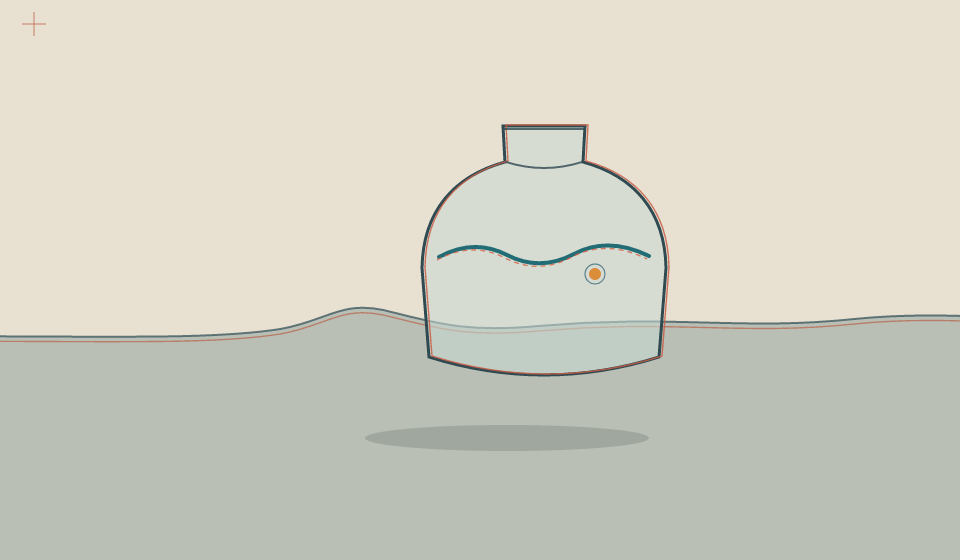

<!doctype html><meta charset="utf-8"><meta name="viewport" content="width=device-width,initial-scale=1">
<title>The Moving Frame</title><style>body{margin:0;background:#e8e0d0;color:#26383a;font:16px Georgia,serif}main{max-width:960px;margin:8vh auto;padding:0 4vw}h1{font-weight:400;font-size:1.4rem;margin:0 0 1rem}img{display:block;width:100%;height:auto}p{font-size:.9rem;color:#53605c}</style>
<main><h1>The Moving Frame</h1><p>A camera passes a vessel that does not move.</p></main>